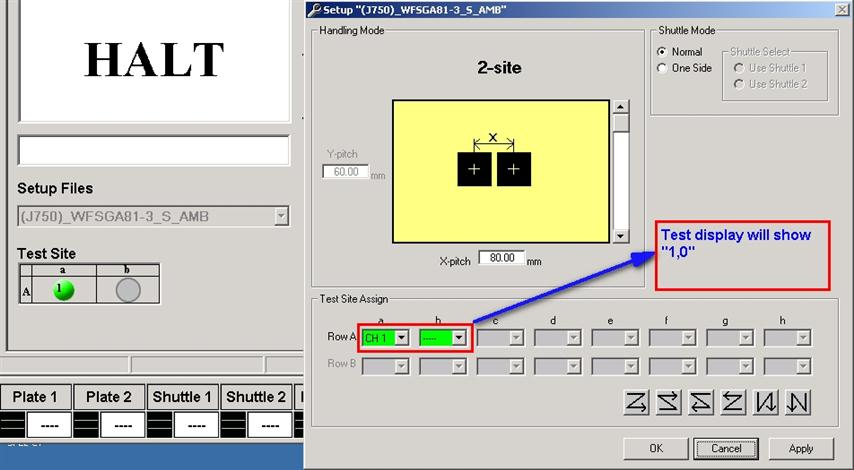

Service History
Subject: WSFGA-81-S Site mapping error
Handler Model: NS-8040(Infineon, NS-001)
Controller: RC520
Date: 18 Dec 2008
Symptom
WSFGA-81-S (device size 6x6, running single site; 2-site disable site B)
Site mapping error reported by customer before HMI upgrade to F10.12-SIS.
HMI upgrade, reboot and start at Initial Start after Index Arm 1 plunge to test site, HMI error msg: "IFUNT time up error" Code:351, sub: 7, [Retry]+[Start] at NS-8040
J750, msg: " Site: 1 not found in Channel map select appropriate chanmap and re-enable Handler"
operator reload test program
press [Retry]+[Start] at NS-8040, then testing ok and continue.
Action
Suggest to use "Busy Shuttle" instead of 2 site disable site B.
It could be that tester program maybe expecting a single site(1 digit) answer but the existing setup at handler replied to tester with "1,2" ( 2 digits) which may explain why tester response "Site: 1 not found in Channel map select appropriate chanmap and re-enable Handler" during handler start in Initial Start mode.
Will try out "busy shuttle" setup when system time is available.
1)Monitor site mapping error. It seem that only Initial Start then site mapping error issued from J750. During Pause, clear jam, One Cycle or Continuous Start there was no site mapping error. KT Goh from Tester SW & Host Management suggest to MK Mang that
1) hand shaking issue between the handler and tester's hander driver. In this case, in addition, we need to get Teradyne to debug. OR
2) channel map also concerns with the "chanmap" kind of stuff. Then the yield engineer can clarify this is whether an issue with the test program.
Cause
Remarks
additional information for the discussion on 23 Dec.
I suggest to try out using "busy shuttle" setup refer "Suggestion1.jpg"
(or 2nd option that is non-assignment of channel for un-use site, refer "Suggestion2.jpg", which is not recommend as it is still 2-site).
Suggestion1.jpg

Suggestion2.jpg
Existing setup for WFSGA81-3-S, refer "Sitemap WFSGA81-3-S.jpg" use 2-site setup in SETUP windows ("Channeling Setup Window") but at HMI screen disable Site 2 (or rather Infineon Channel 1).
(for NS-8040 for Site 1,2 at Infineon it corresponse directly to Channel 0,1 at the tester side which may cause confusion to those who are not familiar with EPSON handler).
I guess tester program maybe expecting a single site(1 digit) answer but the existing setup at handler replied to tester with "1,2" ( 2 digits) which may explain why tester responsed "Site: 1 not found in Channel map select appropriate chanmap and re-enable Handler" during handler start in Initial Start mode.
Please also refer attached "InfineonGPIB_commands.pdf", "3.3 Sites Mapping" on assignment.